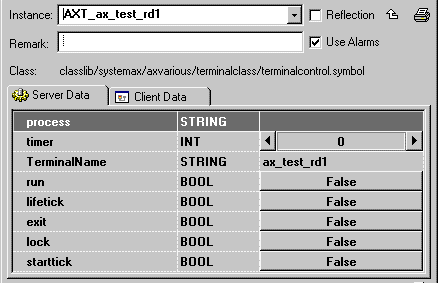
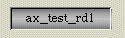
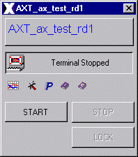

| terminalcontrol |
With the terminalcontrol class you are able to control a terminal with the functions:
With the START-function you can start a
terminal at an other computer. You have to care about the instance-name
of the terminalclass. It should have the following form:
AXT_hostname.
The content of the TerminalName
STRING-variable should be the hostname of the terminal.

Figure 1: terminalcontrol
- Explorer Window
Now a terminal at the defined computer will be started.
2. STOP
With the STOP-function you can stop the terminal, so the aX-Viewer is no longer visible at the terminal.
3. LOCK
With the LOCK-function you can lock any
functions at the terminal. The user at the terminal is only able to see
the process pictures.
Features | Installation | User Interface | Implementation Notes
The terminalcontrol class is comprised of the
following components (files):
| Class Component | Description | File Name(s) |
| Class File | Includes the process picture representation and any popup menus. | terminalcontrol.symbol
|
| Graphic Files | Class Specific Graphic Files for both, class definition and documentation. | axclassdoku16.bmp
axclassdoku_grey16.bmp axinstanzdoku16.bmp
axinstanzdoku_grey16.bmp axparam16.bmp
axparam_grey16.bmp
axservice16.bmp
axservice_grey16.bmp
axtrend16.bmp
axtrend_grey16.bmp
AXClock.bmp AXClock1.bmp AXClock2.bmp AXClock3.bmp AXClock4.bmp AXClock5.bmp AXClock6.bmp AXClock7.bmp AXClock8.bmp AXComputer.bmp AXComputeroff.bmp (and some documentation pixel maps) |
| HTML-Document | HTML document for Online Help. | terminalcontrol.htm |
Installation: The
above listed files must be copied into a common sub-directory within the
project's "classlib" directory. The name of the common directory can be
chosen freely.
Features | Installation | User Interface | Implementation Notes
1. Graphical Representation
In the graphical representation the hostname of the defined terminal computer is visible.

Figure 2: Graphical Representation
2. Operator Popup
The Operator Popup includes Buttons for the Start-, the Stop- and the Lockfunction.

Figure 3: Operator Popup
While the terminal is starting, the clock
on the popup is animated.
If the terminal is started successfully,
the cross on the computer graphic will disappear.
The text next to the computer graphic describes
the following states:
| Terminal is started successfully | "Terminal Started" |
| Terminal is stopped | "Terminal Stopped" |
| Terminal gets started | "Terminal Gets Started" |
| Error - unable to start the terminal | "Can't Open Display" |
Features | Installation | User Interface | Implementation Notes
The aX-Viewer process never truly "runs"
on the defined terminal. Rather, the process runs on the server and the
graphical interface is exported to the defined terminal.
Features | Installation | User Interface | Implementation Notes